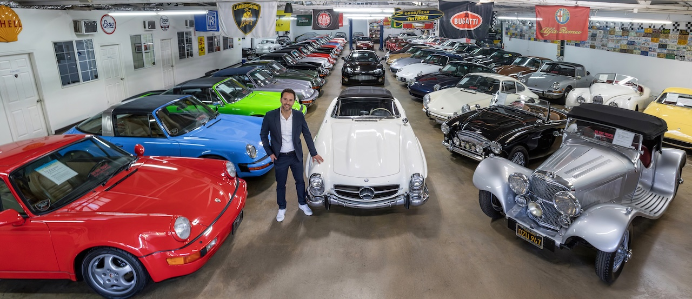

1965 Mercedes-Benz 300SL Roadster
$1,395,000
Beverly Hills Car Club by Alex Manos
The specification for the system, not the page. Every value below is a token in assets/css/tokens.css and is mirrored into Bootstrap 5.3.8 in assets/scss/_variables.scss. Contrast ratios are measured, not estimated.
01 — Palette
The brief bans primary red, blue and green as accents. Every neutral here sits between hue 38°–45°, so the palette reads as one warm family. Ratios are WCAG 2.1 against the surface named. Gold exists twice on purpose: --gold scores 2.33 on off-white and is unusable as text there; --gold-ink is the same hue two levels down and passes AA. Gold fills always take ink text — white on gold is 2.46 and is never allowed.
The logo shield is #D31720 and the hero car is red — but the brief bans red as an accent. They are separated by role, not by removal. Red is content: logo artwork and photography. Gold is chrome: hairlines, hovers, focus. They never carry the same job, and they never appear at the same visual weight — red arrives as a large photographic mass, gold only ever as a 1px line or a small mark. Both are warm (red 357°, gold 41°, base 45°), so they sit in one family rather than fighting. Practical rule: no gold inside the header, where the logo lives — gold enters below the fold, after the hero has handed off.
02 — Typography
Gloock ships a single style: weight 400, no italic, no axes. That one fact drives everything here. It is loud, wide (cap-height 75/100 — the largest of the three) and sets lining figures, which matters more than it sounds for a dealer whose every card is a year and a price. Because it has no italic, §07’s “quote text (italic serif)” needs a second serif — that is the only reason Newsreader is in the build, and it loads as a 23.8KB static italic. Inter carries no brand voice by design: under a didone this loud, the sans must be silent.
The brief asks that H1 feel “significantly larger and lighter-weight than H2”. Gloock has one weight, so literal weight contrast is not available. Hierarchy is carried by size instead: hero 88px vs H2 40px = 2.2×, plus tracking. Do not “fix” this by bolding H2 — a synthesised bold on a didone thickens the hairlines and looks broken. font-synthesis: none is set globally to prevent exactly that. If literal weight contrast is ever required, the display face has to change; nothing else delivers it.
03 — Spacing & section rhythm
8px base. Steps 1–5 deliberately match Bootstrap’s stock spacers so mb-3 still means 1rem for the dev team; 6–9 are added, not remapped. Section padding is fluid: 72px at 390 → 128px at 1440, and the Alex Manos editorial band gets 160px. Card gap is 32px — the same figure measured on Superior Motors.
04 — Buttons & links
The brief is explicit: “Sentence case for all headlines and CTAs.” No all-caps button labels anywhere — caps are reserved for eyebrows. Radius is 0: both style anchors agree (Superior Motors renders 672 elements at 0px vs 13 at 5px; Gallery Aaldering is 0px throughout), and Bootstrap’s .375rem default is switched off at the variable level with $enable-rounded: false.
05 — Form states
Placeholders use --ink-muted (5.06 ✓AA) — never a light grey on off-white. Focus is a 2px --gold-ink ring: plain gold would score 2.33 and fail the 3:1 non-text threshold. Inputs are 48px tall — a real touch target.
§03 search field.
2px gold-ink ring, 4.58 ✓.
Enter a valid email address.
You’re subscribed.
--bg-deep fill.
Compact, one line.
06 — Inventory card
Brief §04: “Minimal — no heavy card borders or shadows. Let photography carry the weight.” Bootstrap’s .card ships a border, a background and a radius, so we don’t import _card.scss at all and neutralise the variables as a safety net for any WordPress markup that still emits .card. Hover is a 1.03 image scale inside a fixed frame — nothing lifts, nothing shadows. Titles are Gloock at 20px in a reserved 2-line box — corrected from 22px once the real inventory was measured: across all 665 live car titles the median is 32 characters but the max is 75, and 17.9% are too long for one line in a 427px column. At 22px the worst case took 3 lines; at 20px it takes 2. Hover a card.
$1,395,000

$895,000
$284,500
07 — Motion
One easing curve — cubic-bezier(.22, 1, .36, 1) — inherited from Alex’s Prestige convention. Three durations. All of it collapses to 0ms under prefers-reduced-motion, which is wired into the tokens themselves, not bolted on. Hover a bar.
08 — Bootstrap 5.3.8 mapping
Bootstrap is a requirement, not a choice, and the markup ships into a WordPress theme — so the system lands on Bootstrap’s own variables rather than fighting them with overrides after the fact. Every row below is set in _variables.scss before @import "bootstrap", so the offending CSS is never emitted.
| Bootstrap default | Conflicts with | Our value |
|---|---|---|
$font-family-base → system stack | Brief bans system fonts explicitly | Inter + metric-adjacent fallbacks |
$h1-font-size = 2.5rem | Hero must dominate | fluid 30→56; hero 34→88 |
$headings-font-weight = 500 | Gloock has one weight → synthetic bold | 400 + font-synthesis: none |
$body-bg #FFF · $body-color #212529 | Both wrong; cool, not warm | #FAF9F6 · #1A1A18 |
$border-radius = .375rem | Reads as a template; refs are square | $enable-rounded: false + 0 |
.container xxl = 1320px | Comp is 1440 | xxl 1440 + fluid padding → 1344 content |
.card border + bg + shadow | §04 bans both | module not imported; vars zeroed |
$primary #0d6efd (blue) | Brief bans blue | remapped to --dark; secondary = gold |
$line-height-base = 1.5 | Brief demands 1.7+ | 1.75 |
$spacers 0–5 only | No editorial-scale steps | 6–9 added; 0–5 left stock |
In: functions · variables · maps · mixins · utilities · root · reboot · type · images · containers · grid · helpers · transitions · buttons · forms · nav · navbar · dropdown · accordion (§09 mobile) · carousel (§07) · offcanvas (§01 mobile) · close · utilities/api
Out: card · modal · alert · badge · breadcrumb · list-group · pagination · popover · progress · spinners · tables · toasts · tooltip · placeholders · button-group